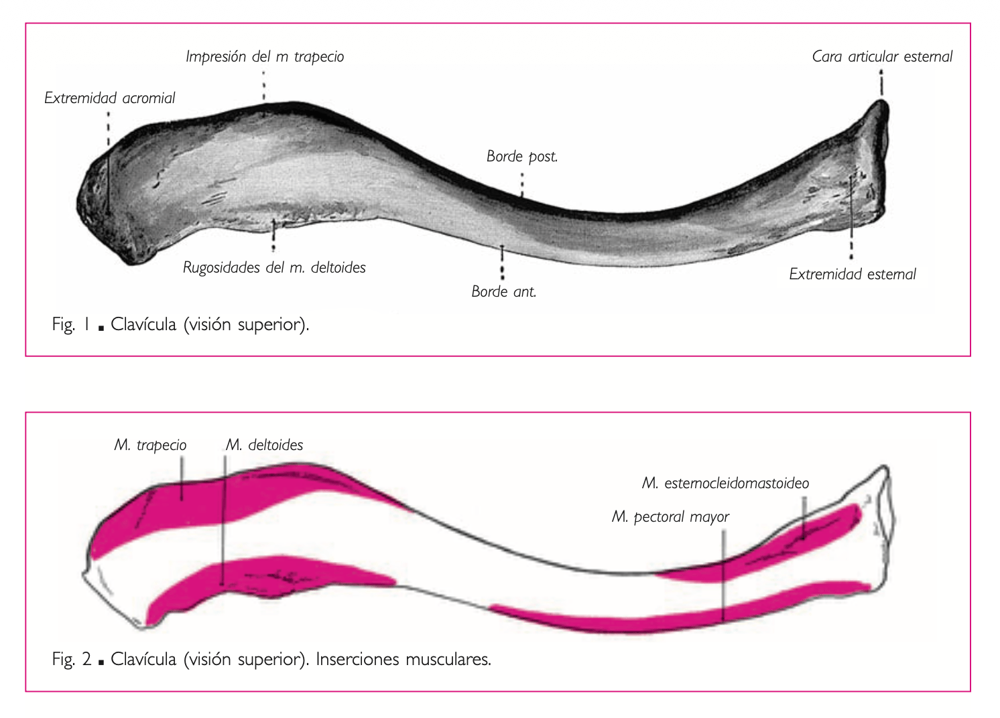
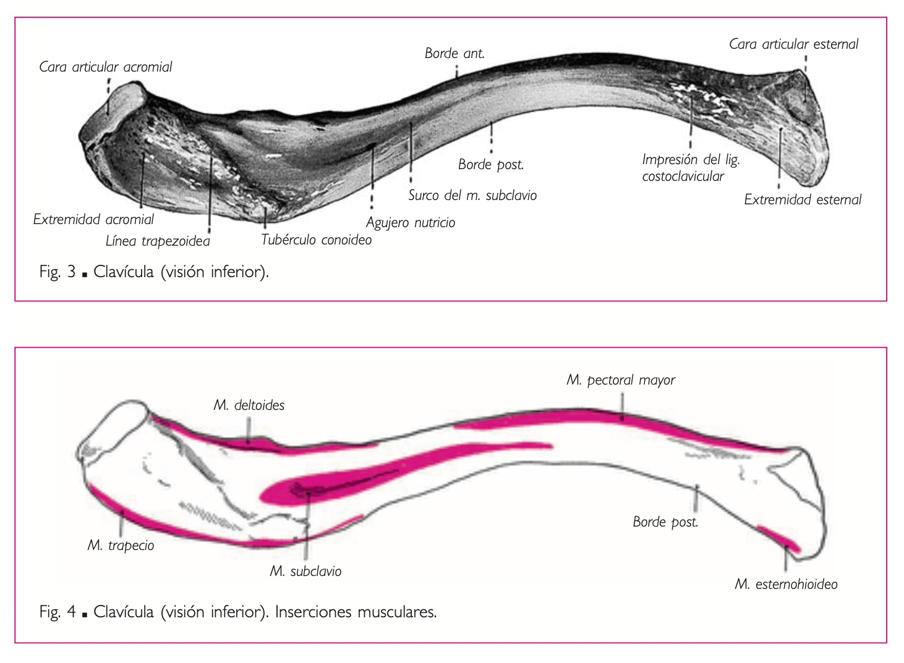
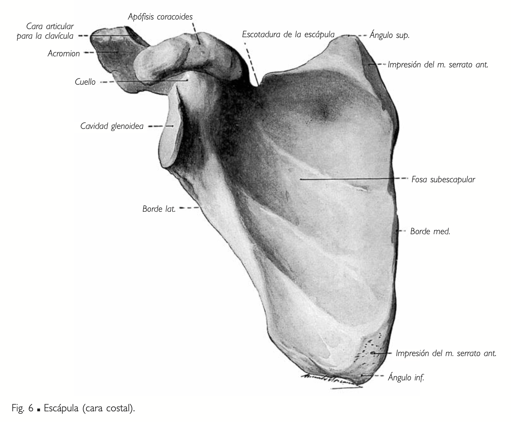
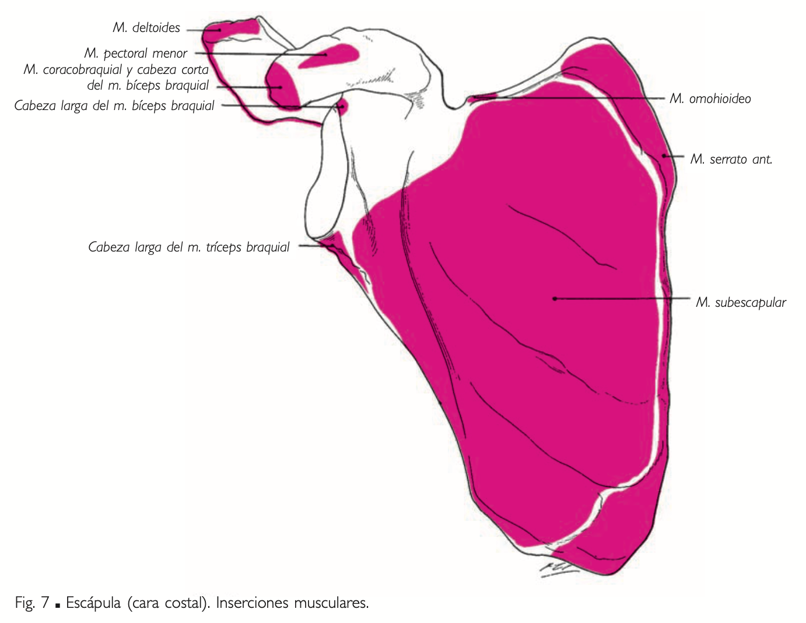
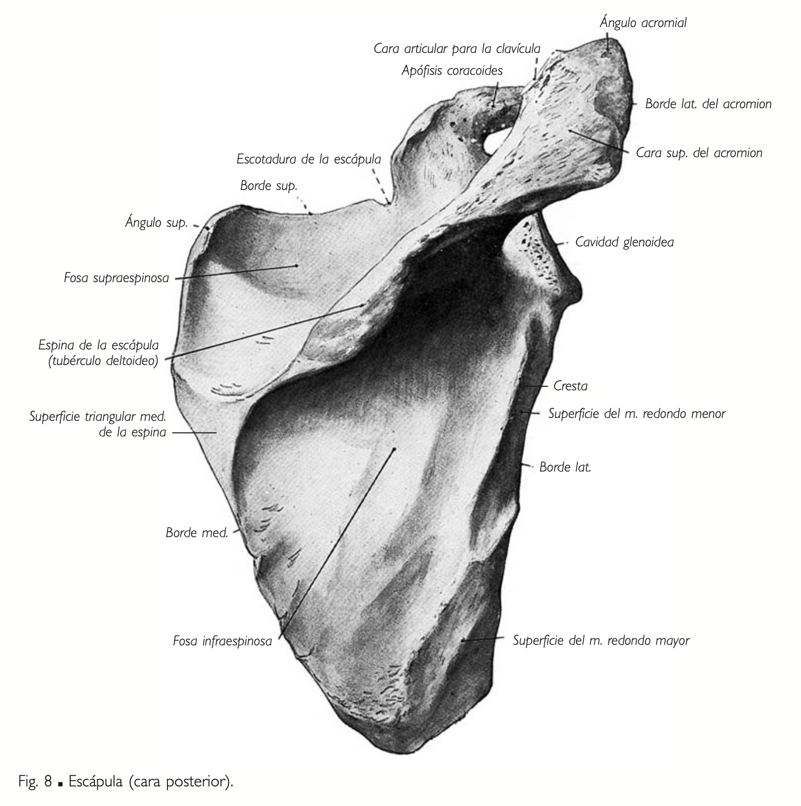
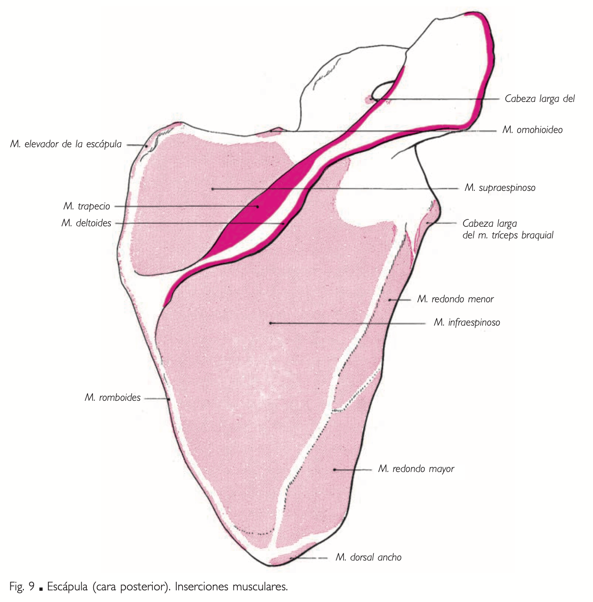
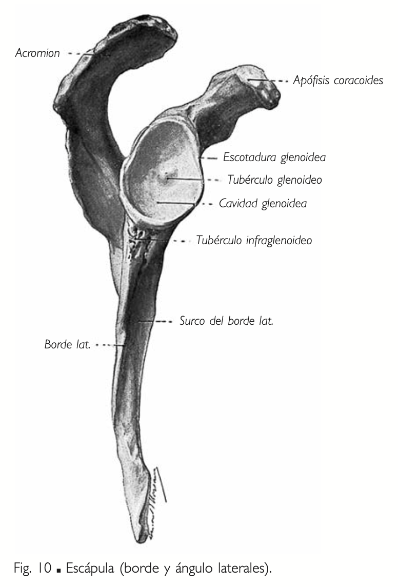
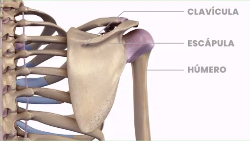
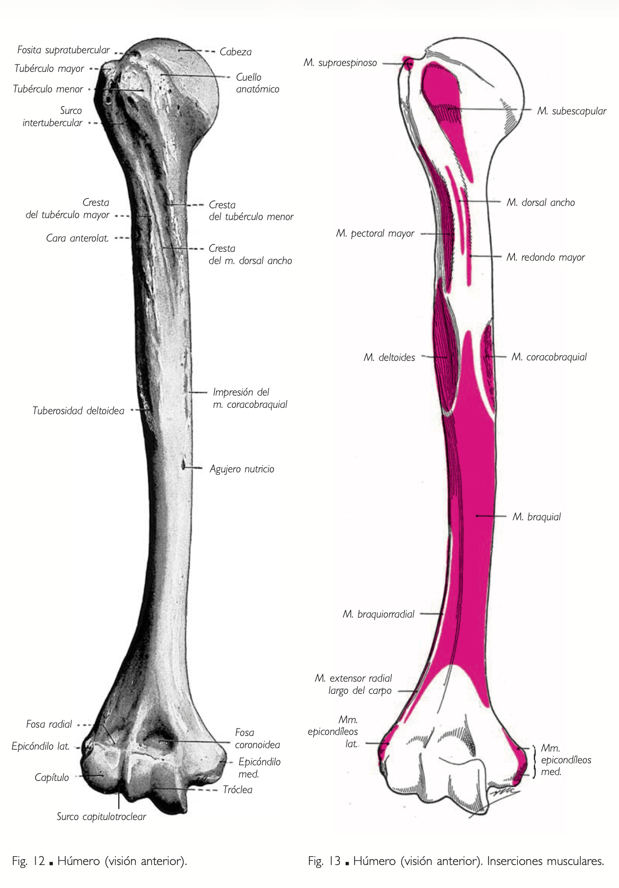
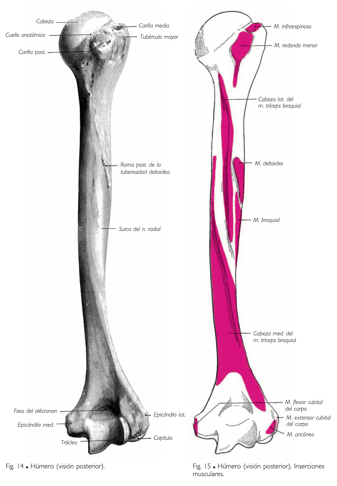

Clavícula - Escápula - Húmero
Accidentes óseos y referencias del esqueleto del miembro superior.
Clavícula
Hueso largo porque predomina su largo por sobre su ancho y espesor, situado en la porción anterosuperior del tórax especifícamente en la cintura escapular. Articula hacia anterointerno con el esternón y hacia posteroexterno con el acromion escapular. Tiene forma de S itálica: curvatura interna (2/3) convexa y curvatura externa (1/3) cóncava.
Formado por:
- Epífisis distal→ Muy aplanada y rugoso= Articula con el Acromion.
- Epífisis proximal → Más redondeada.
A su vez, en su conjunto tiene:
- Cara superior: Es más lisa inserciones musculares.
- En los dos tercios proximales y en el borde posterior se inserta el M. Esternocleidomastoideo.
- En los dos tercios proximales en el borde anterior se inserta el M. Pectoral mayor.
- Hacia externo, inserción del M. Deltoides y del M. Trapecio.
Referencia visualImagen 01
{kind=link}

- Cara inferior:
- En su tercio proximal tuberosidad costoclavicular (Inserción del Ligamento Costoclavicular) (trapezoide - conoide)
- Canal subclavio (Inserción del M. Subclavio)
- En el tercio distal Tubérculo Conoideo + Tubérculo Trapezoideo (Reciben al ligamento coracoclavicular)
Referencia visualImagen 02
{kind=link}

Escápula
Hueso plano situado en la porción posterosuperior del tórax. Articula hacia externo con la cabeza humeral y hacia anterior con la epífisis externa de la clavícula. Tiene forma de triángulo: 2 caras, 3 bordes y 3 ángulos.
Cara anterior:
Fosa Subescapular:
- En la cara anterior de la escápula.
- Aloja al músculo subescapular (rotador interno del hombro).
Referencia visualImagen 03
{kind=link}

Referencia visualImagen 04
{kind=link}

Cara posterior:
Dividida por la espina del omóplato en una fosa supraespinosa e infraespinosa.
Fosa Supraespinosa:
- Sobre la espina de la escápula (cara posterior).
- Contiene al músculo supraespinoso (inicia la abducción del brazo).
Fosa Infraespinosa:
- Debajo de la espina de la escápula (cara posterior).
- Aloja al músculo infraespinoso (rotador externo del hombro).
Referencia visualImagen 05
{kind=link}

Referencia visualImagen 06
{kind=link}

Bordes de la Escápula:
- Borde superior:
- Escotadura coracoidea.
- Inserción del músculo omohioideo.
- Borde externo:
- Hacia superior:
- Cavidad glenoidea → Articula con la Cabeza del Húmero
- Por arriba y por debajo de esta cavidad:
- Tubérculo supraglenoideo. → Porción larga del biceps
- Tubérculo infraglenoideo. → Porción larga del triceps
- Hacia inferior: Inserción de los músculos redondos (redondo menor encima y mayor debajo).
Referencia visualImagen 07

- Hacia superior:
{kind=link}
- Borde interno:
- Hacia anterior: Inserción del músculo serrato mayor.
- Hacia posterior: Inserción del músculo romboides.
- Es filoso.
Ángulos de la Escápula:
- Ángulo superoexterno:
- Acromion + Apófisis coracoides. → El Acromion es la terminación de la espina.
- En ella se insertan 3 músculos (pectoral menor, bíceps braquial porción corta y coracobraquial) y 3 ligamentos (coracoclavicular, coracoacromial, coracohumeral).
- Ángulo superointerno:
- Inserción del músculo elevador de la escápula.
- Ángulo inferior:
- Inserción del músculo dorsal ancho.
Referencia visualImagen 08
{kind=link}

Húmero
El húmero es el hueso más largo del miembro superior. Hacia superointerno articula con la cavidad glenaoidea de la escapula, hacia inferointerno con la cavidad sigmoidea mayor del cúbito y hacia inferoexterno con la cúpula radial. Forma prismática triangular en su porción media, caracterizada por tres caras y tres bordes.
Partes del Húmero
- Epífisis Proximal:
- Hacia Superointerno.
- Cabeza: Superficie articular esférica que se articula con la cavidad glenoidea de la escápula.
- Forma de un tercio de esfera
- Por debajo de la cabeza se encuentra el cuello anatómico.
- Troquin (tuberculo menor): Inserción para el músculo subescapular.
- Mira hacia anterior.
- Troquiter (tuberculo mayor) : Hacia externo.
- Inserción para los músculos, supraespinoso, infraespinoso y redondo menor.
- Estos músculos forman el manguito rotador
- Inserción para los músculos, supraespinoso, infraespinoso y redondo menor.
- Surco intertubercular→ corredera bicipital: Pasa el tendón de la cabeza larga del bíceps.
- En el labio interno de la corredera bicipital se inserta el M. Redondo Mayor, en el labio externo el M. Pectoral Mayor. Y en el trasfondo o fondo se inserta el M. Dorsal Ancho.
Referencia visualImagen 09

- Hacia Superointerno.
{kind=link}
- Diáfisis (Cuerpo): Forma Prismática Triangular
Borde Anterior: → Separa caras anteroexterna y anterointerna.
Cara Anteroexterna:
- Tuberosidad deltoidea. → V Deltoidea (a la mitad de la cara AE). → Inserción del músculo deltoides.
- Origen del músculo braquial.
- Surco del nervio radial: Recorre oblicuamente esta cara y aloja al nervio radial.
Borde Externo - Lateral: → Separa caras anteroexterna y posterior
Cara Anterointerna: → Solo inserciones de músculo.
- Inserción del músculo coracobraquial. → Superior.
- Origen del músculo braquial anterior. → Inferior.
- Estos dos músculos pertenecen al plano profundo del grupo anterior del brazo, están por debajo del biceps.
- Contacto con la arteria braquial y el nervio mediano.
Borde Interno - Medial: → Separa caras anterointerna y posterior.
Cara Posterior:
- Cubierta por el músculo tríceps braquial.
- Canal radial → Canal de Torsión
- Por encima del Canal de Torsión se inserta el basto externo del triceps y por debajo se inserta el basto interno del triceps.
- Arteria Humeral Profunda
- Nervio Radial
Referencia visualImagen 10

{kind=link}
- Epífisis Distal: De Interno a Externo
- Epitroclea - Epicondilo Medial → Interno: Inserción para músculos flexores de la muñeca y dedos.
- Tróclea: Superficie articular en forma de polea para el cúbito.
- Cóndilo humeral → Articula con la cúpula radial.
- Epicóndilo: Inserción para músculos extensores de la muñeca y dedos.
- Superior a la tróclea y el cóndilo encontramos dos impresiones, la fosa coronoidea y la fosa radial.
- Fosas:
- Fosa olecraniana: Recibe el olécranon del cúbito durante la extensión.
- Fosa Oleocraniana → Hacia posterior
- Fosa coronoidea: Recibe la apófisis coronoides del cúbito durante la flexión.
- Fosa Coronoidea → Hacia anterior
- Fosa radial: Recibe la cabeza del radio durante la flexión.
- Fosa Radial → Hacia anterior (más externa)
- Fosa olecraniana: Recibe el olécranon del cúbito durante la extensión.